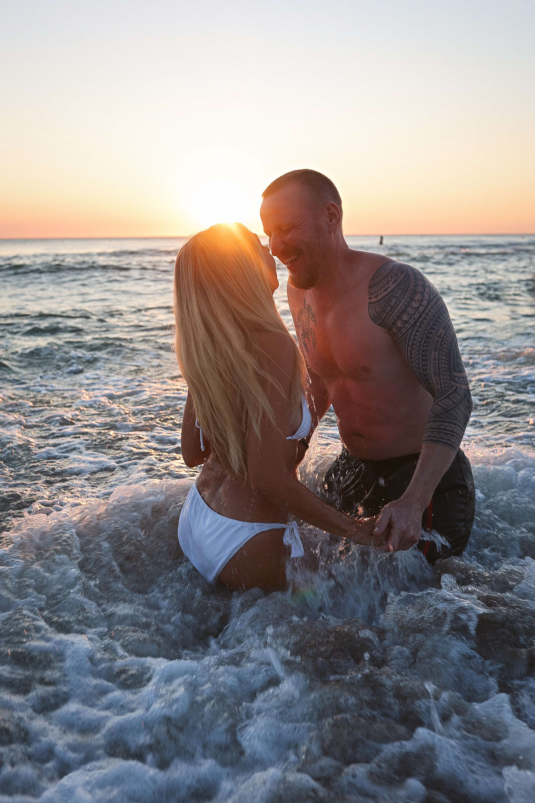

фотограф в Калининграде
В моём портфолио преимущественно много СЕМЕЙНЫХ фотосессий, и правда, я очень чувствую атмосферу семьи и получаются очень душевные серии снимков. Но также с большим удовольствием провожу ИНДИВИДУАЛЬНЫЕ съёмки для девушек и парней, чувственные LOVE STORY, Свадебные съёмки, Таинства Крещения и камерные Дни Рождения. Я ценю возможность создавать для своих клиентов такую память, как фотографии, мои работы про любовь, чувственность и тёплые моменты в жизни людей.
Я снимаю в городе Калининград и его большой-красивой области, с радостью подскажу интересные локации для предстоящей съёмки или же обсудим возможные варианты фотостудий, если планируется студийная съёмка. Не стоит переживать за неумение позировать, этот навык я помогу приобрести во время нашей съёмки, но так, чтобы кадры получились настоящими, живыми и конечно красивыми.
— Love story
— Индивидуальные
— Семейные/детские
— Свадебные
— Съёмка беременности
— Таинство Крещения
— Камерные Дни Рождения
— Контент - съёмки
— Гендер-пати
Готовый фотоматериал я отдаю в течение 4-5 дней, за исключением Свадебных (6-7 дней) непосредственно сроки зависят от загруженности и сложности съёмки. За 1 час фотосессии я отдаю достаточно много снимков, 100-120 кадров в ретуши и моей авторской обработке. Всегда стараюсь отдавать готовые фото, как можно раньше.
Да, бывают такие ситуации, когда клиентам необходимо отправить готовые фото уже на следующий день, в этом случае эта услуга оплачивается отдельно (+1500р к основной стоимости съёмки) я вне очереди начну обрабатывать вашу съёмку и отправлю уже готовую на следующий день.
Да, возможно провести экспресс-съёмку, если вы уже точно знаете, какие снимки хотели бы получить и вам будет достаточно 40-50 кадров в обработке. Стоимость будет указана в прайсе.
Да, я делаю качественную детальную ретушь, если она необходима. Для меня готовая красивая картинка - не замыленное лицо, но если вдруг у вас явные дефекты на лице такие как, прыщики, пятнышки, синячки под глазами, будьте уверенны, я постараюсь над красивой картинкой.